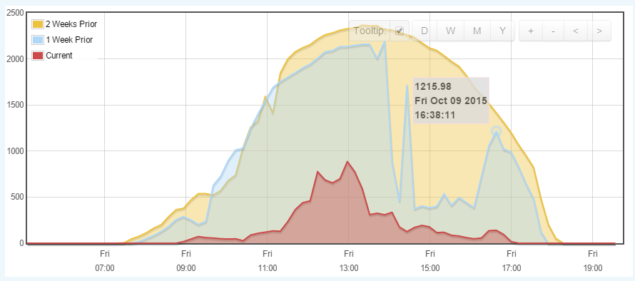
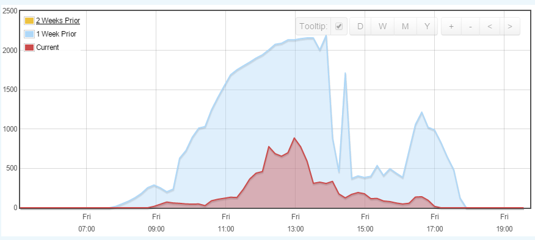
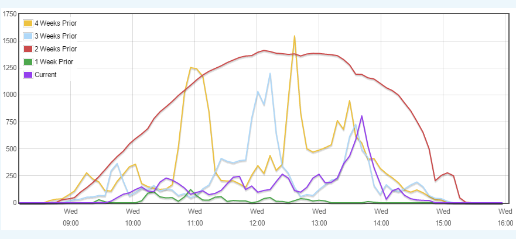
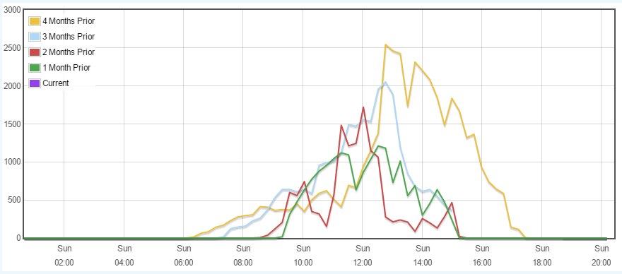
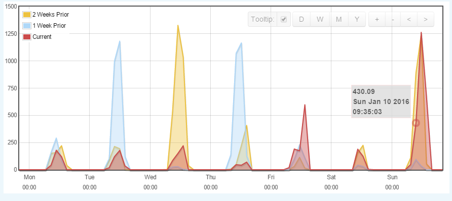

We've received a new emoncms Visualization 'Timecompare', to consider adding into the emoncms library, and I'd like to share some screenshots of a Solar feed to see what support there would be for this.
'Timecompare' is a new visualization to allow you to more easily compare power / energy reading over time.
You select a feed and it will display multiple lines for that same feed at different times. For instance one line will be the current week, another line will be for the previous week, and a third line will be for three weeks ago. They are displayed on top of each other (like a multigraph) so you can quickly compare the data.
You can switch between comparing days, weeks, months, or years.
You can also specify how for back to go (how many depths to display).
You can also hide and restore any line in the graph by clicking the name of the line in the legend. So if one line is obscuring another, simply hide it.
Comments please
Paul
By clicking the '2 weeks prior', I can hide it;

In the vis configuration, you can determine if you want a fill or not 0 = No, 1 = Yes, and also how deep you want the data to display, above was 3, below is 5;

By clicking weekly as above, you can select different depth periods, and monthly below;

You can view data over several days, weeks..

Re: New Visualization - Timecompare
Wow. Looks great !
Re: New Visualization - Timecompare
Very cool!
Re: New Visualization - Timecompare
great work.
Re: New Visualization - Timecompare
Excellent addition !!
Paul
Re: New Visualization - Timecompare
Nice. And a very useful tool as well!
Re: New Visualization - Timecompare
Wonderful.
Any chance of extending the period to be able to compare the day/week/month to the same day/week/month of the previous year(s)?
Re: New Visualization - Timecompare
You already can, select 'year' view, then zoom into month, week, day.
Paul
Re: New Visualization - Timecompare
Looks good, nice.
Re: New Visualization - Timecompare
Looks great, I've merged it into the master branch. Once tested it will get merged into the stable branch.
Re: New Visualization - Timecompare
Works lke a champ on an OVH shared Linux host.
Nice. Thanks!